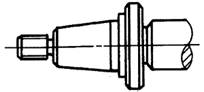

注 意 事 项 |
图 例 |
说 明 |
|
改 进 前 |
改 进 后 |
||
减少大面积的加工面 |
把相配的接触面改成环形带 |
||
整个支承面改成部分支承面 |
|||
减少大面积的磨削加工面 |
|||
减少轴类零件的阶梯差 |
某些车床主轴以热压组合零件代替大台阶整体零件（在成批生产中可采用模锻） |
||
 |
某些磨床主轴以镶套零件代替凸台 |
||
采用无切削加工 |
以精铸手柄代替加工件手柄，无需加工，且外形美观 |
||
简化工艺复杂的结构 |
在刀架转盘圆柱面上刻度，四周要进行复杂加工，改在刀架滑座水平面上刻度后，工艺性得到改善 |
||